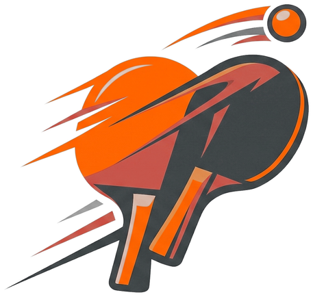

Visitekaartje Edward Westhoff
Ontwerp met dynamische signature swooshes uit de TT Clinics identiteit. Klik op het kaartje om soepel te draaien.
TT CLINICS
Het sportieve bedrijfsuitje
★★★
Edward Westhoff
Oprichter & Hoofdtrainer
06 - 12345678
info@ttclinics.nl
www.ttclinics.nl
Heel Nederland
Dynamiek & Snelheid
Tafeltennis clinics & bedrijfsuitjes

- Company Tournament: clinics & toernooi
- Vitaliteit & Focus: energie op kantoor
- Op Locatie: bedrijfskantine of zaal
Scan & Boek
Tot 12 personen per clinic · Maatwerk mogelijk
www.ttclinics.nl
Klik op kaart
om om te draaien
·
Zijde: Voorzijde
Voorzijde (Printklaar 85×55mm)
TT CLINICS
Het sportieve bedrijfsuitje
★★★
Edward Westhoff
Oprichter & Hoofdtrainer
06 - 12345678
info@ttclinics.nl
www.ttclinics.nl
Heel Nederland
Achterzijde (Printklaar 85×55mm)
Dynamiek & Snelheid
Tafeltennis clinics & bedrijfsuitjes
- Company Tournament: clinics & toernooi
- Vitaliteit & Focus: energie op kantoor
- Op Locatie: bedrijfskantine of zaal
Scan & Boek
Tot 12 personen per clinic · Maatwerk mogelijk
www.ttclinics.nl